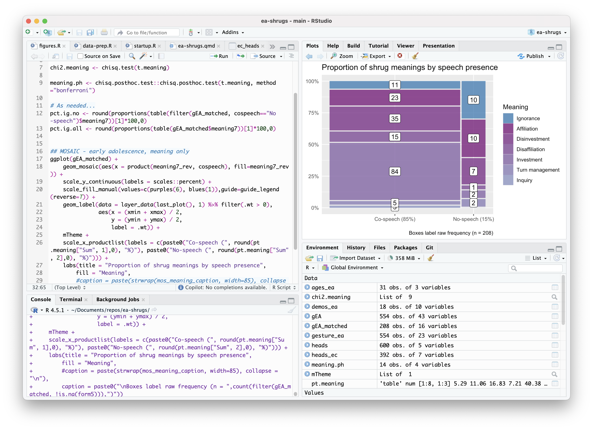
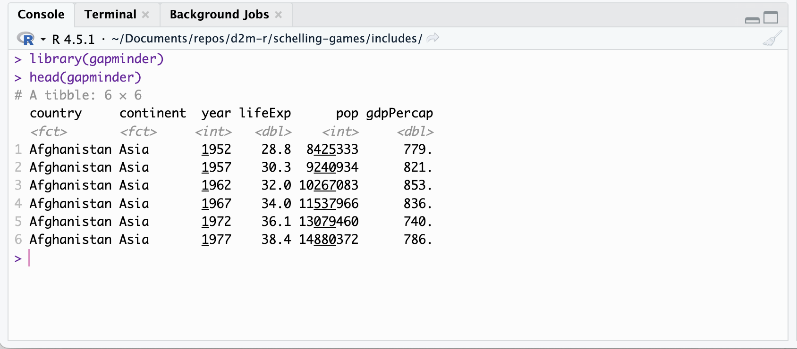
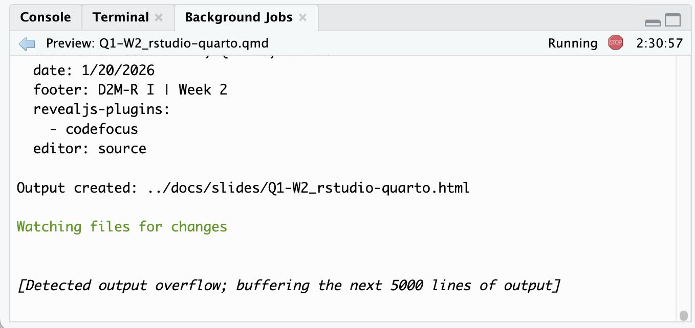

# Assign a string to a variable
rstudio_is_cool <- paste("R", "and", "RStudio", "work", "together!")
# Print the variable
rstudio_is_cool[1] "R and RStudio work together!"RStudio IDE, Quarto, markdown
2026-01-13

Markdown is a lightweight markup language for creating formatted text using a plain-text editor.

R is a programming language and computing environment.


RStudio is an Integrated Development Environment (IDE) for R.


Quarto is an open-source scientific and technical publishing system built on Pandoc.

Console
Terminal
Background Jobs



Directory navigator + working directory management
Working directory matters for file paths:
"/Users/Natalie/Documents/repos/D2M-R/data/mydata.csv""data/mydata.csv"When working in RStudio projects, working directory = project root